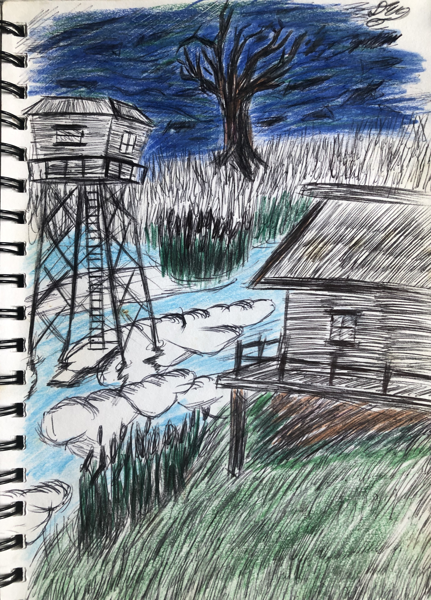
Cabin
Ink and Colored Pencil on Paper, 2017
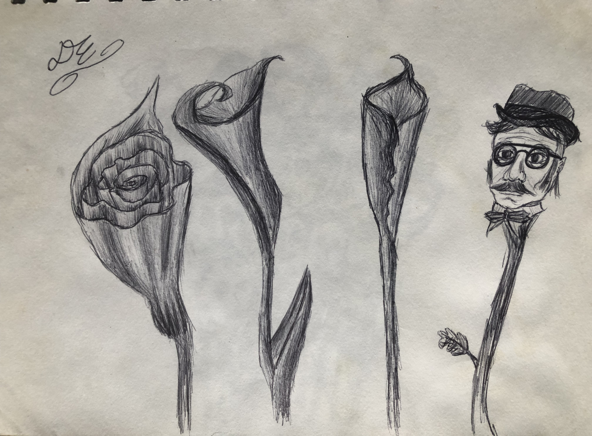
Flowers
Ink on Paper, 2017
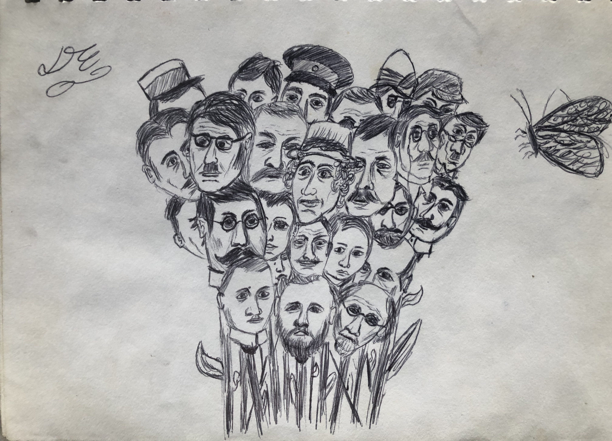
Bouque
Ink on Paper, 2017
Inspired by a Monty Python animated intro

City waves, Drawing
Ink on Paper, 2018
Taken from the cover of William Basiski's album, The Disintigration Loops. In it, it show what appears to be a girl in a white dress with her shoulder puffed out and cropped at the far left. As well as how the clouds looked blending with the buildings in the background.

Museum, Drawing, 2019
Ink on Paper, 2022
A rule that I assigned myself was that all lines that I draw shouldn't be straight but curved and fluid.

Hallucination notes
Ink on Paper, 1/4/20
Documentation of thoughts while under psychedelics.

City Patterns
Ink on Paper, 2020
After certain experiences I now saw the world as a place full of patterns. Working with artist pens, I decied to sit down and work on something that I would take my time with.
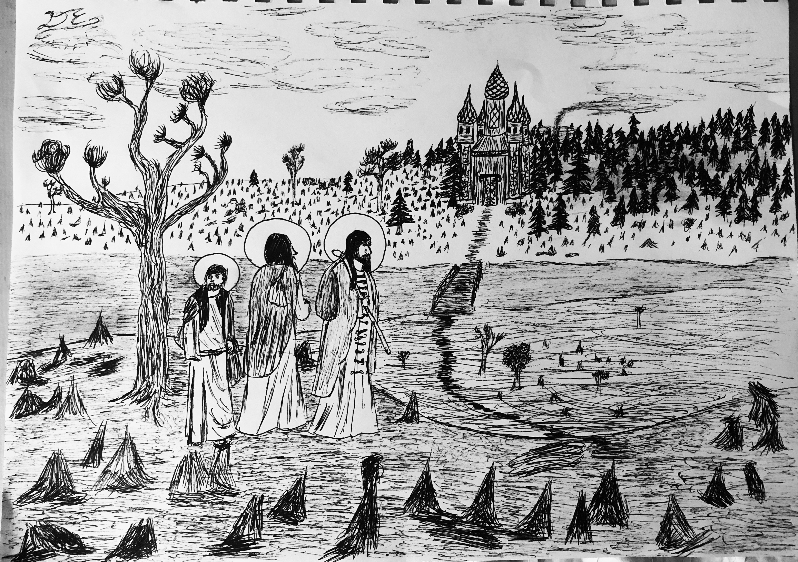
Monks in search of Faith
Ink on Paper, 2020
A quick gift to a distant aunt that I had made the night before she was about to leave. She is a devoted catholic, so I thought to draw her something that wasn't based around faith in a catholic sense but faith as an idea. Also inspried after seeing the 1966 film, Andrei Rublev.
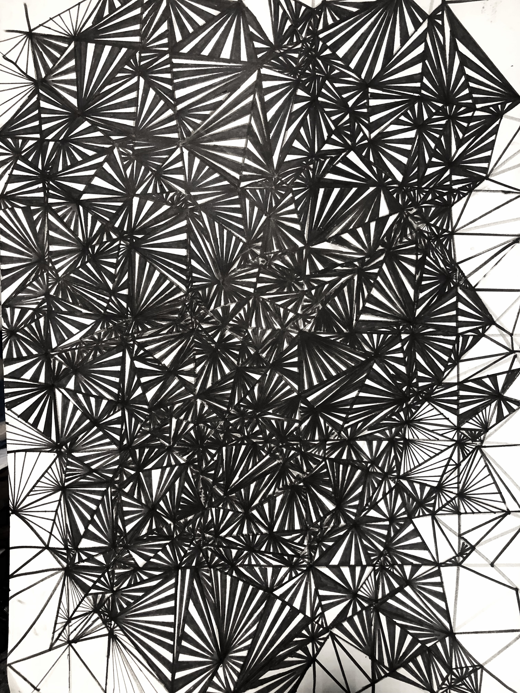
Angles
Ink on Paper, 2022
A web of perspective.
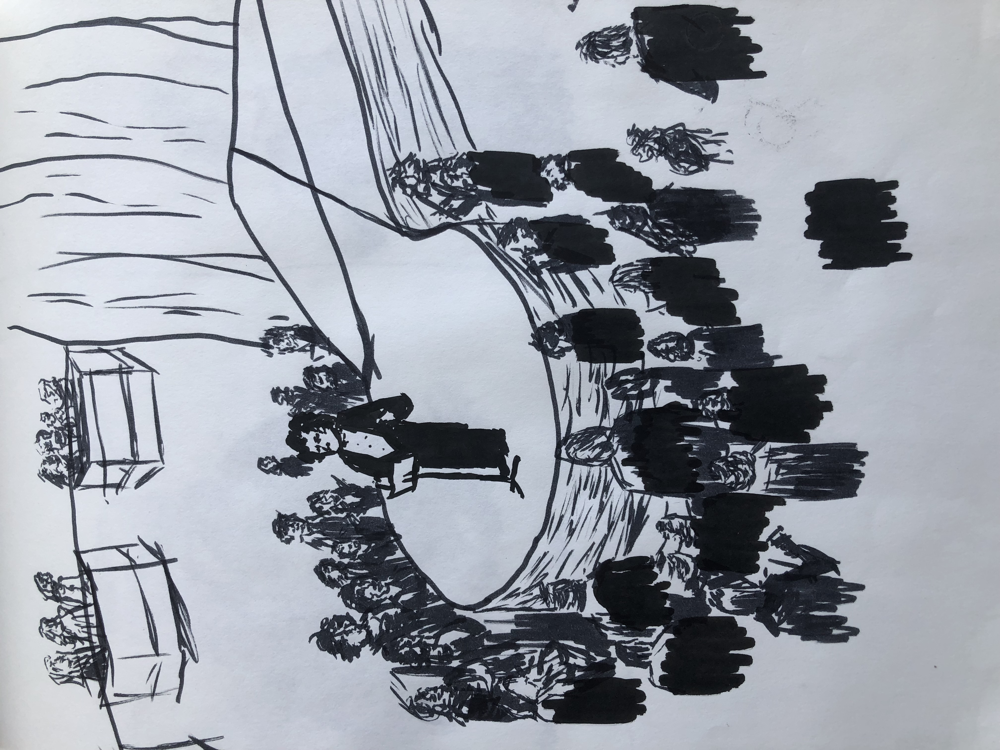
Concert
Ink on Paper, 2022
Ready to conduct
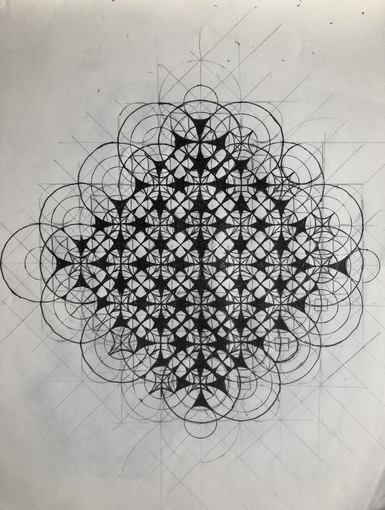
Design Pattern
Ink on Paper, 2022
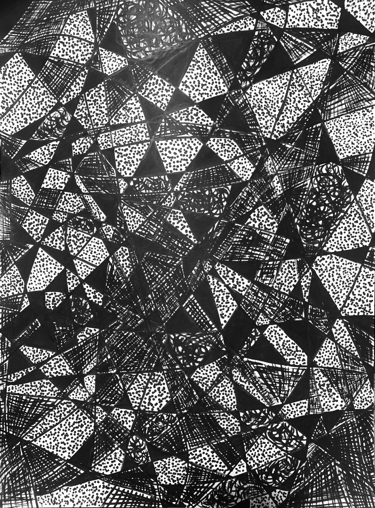
Dimensions
Ink on Paper, 2022
Like doors leading to other worlds.
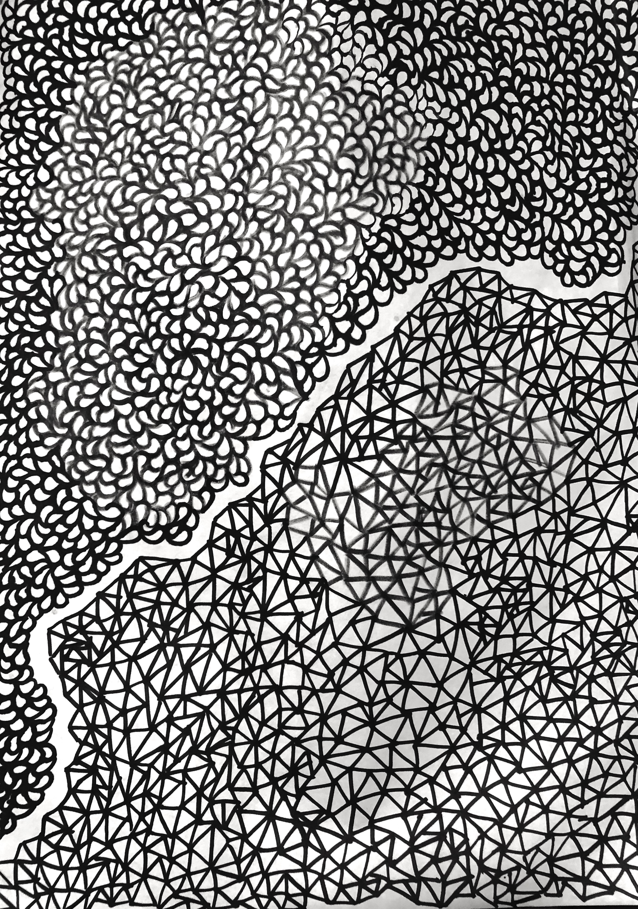
Nets
Ink on Paper, 2022

Cabin by river
Ink on Paper, 2021
Memory by the Yuba River
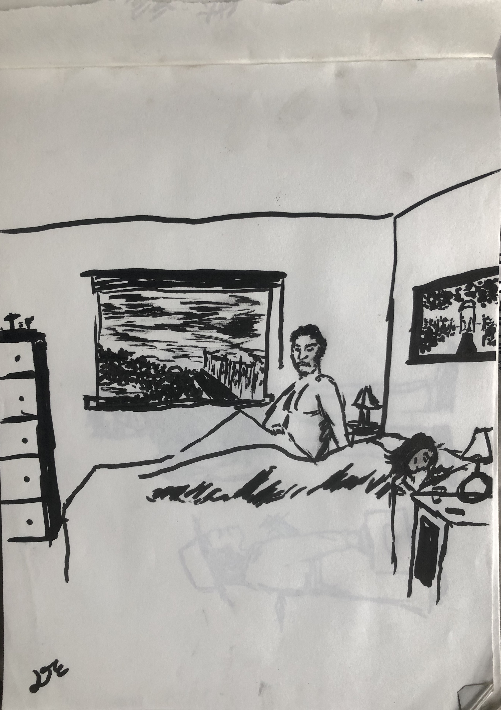
Reflection
Ink on Paper, 2022
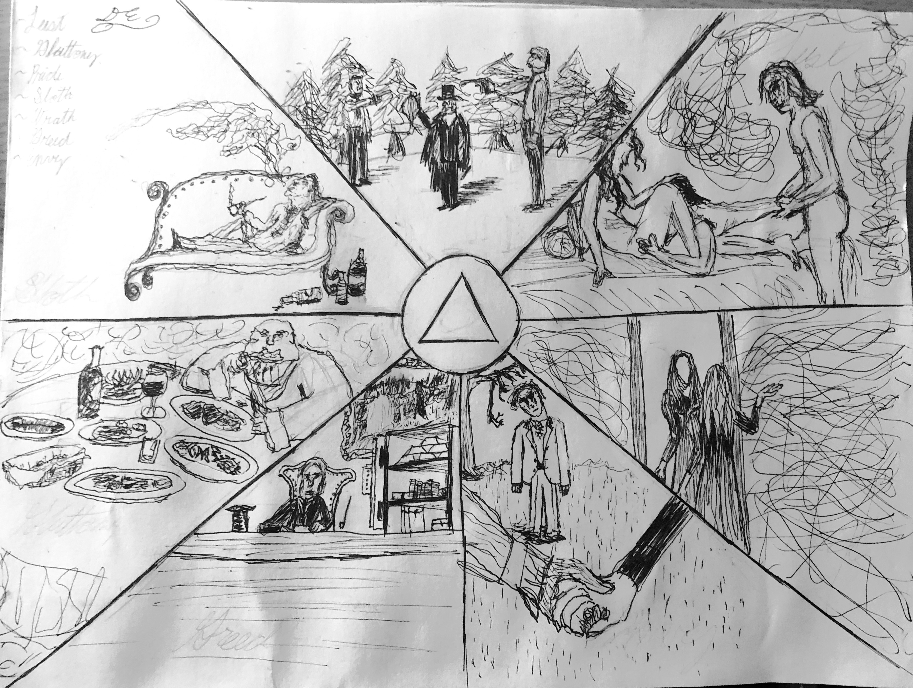
Sins
Ink on Paper, 2021